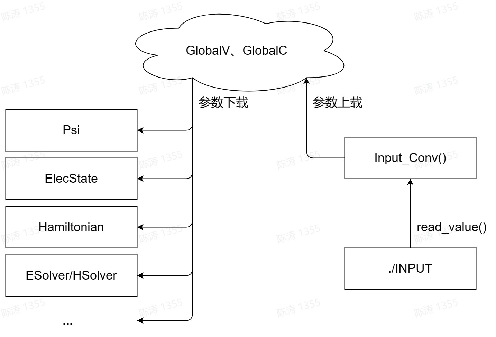
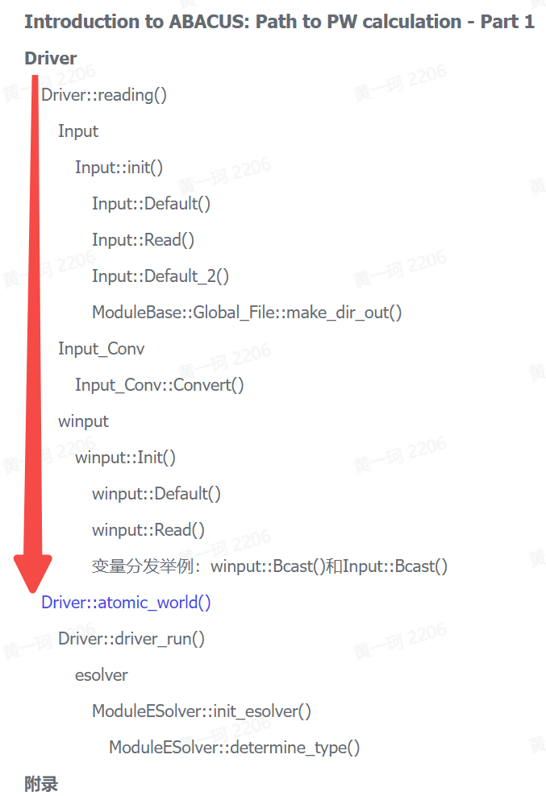
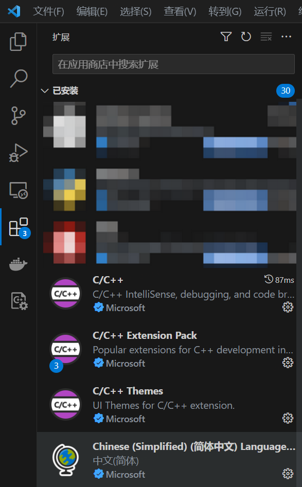
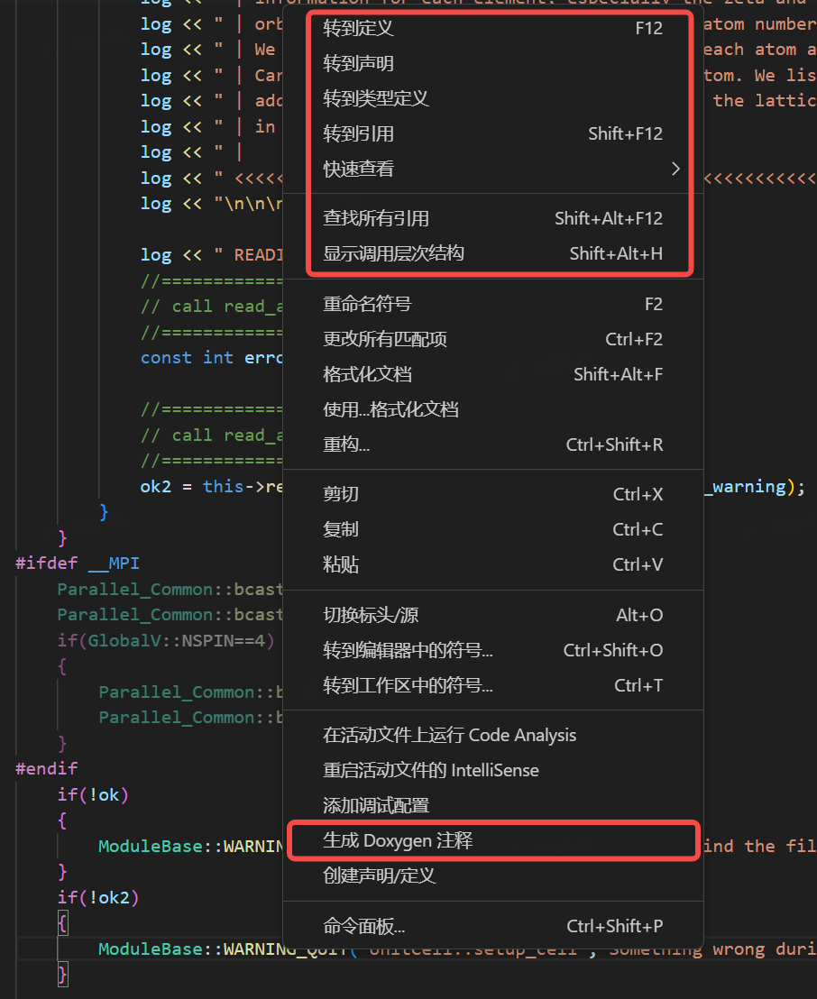
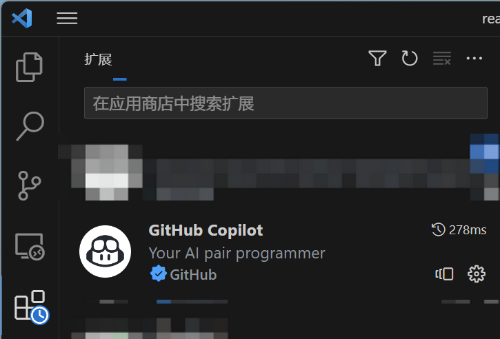

Introduction to ABACUS: Path to PW calculation - Part 1
作者：黄一珂，邮箱：huangyk@aisi.ac.cn
审核：陈默涵，邮箱：mohanchen@pku.edu.cn
飞书链接：Introduction to ABACUS: Path to PW calculation - Part 1
💡写在前面 作为 SIAB（Systematically Improvable Atomic orbital Basis, link）数值原子轨道生成程序的数据上游，本系列文档将首先从平面波基组/SCF（Self-Consistent Field，即自洽场迭代）讲起，将《从 SIAB 到 ABACUS》的讲述延续下去，之后再探索 SIAB 的下游，即涉及 NAOs 的 LCAO method（basis_type = 'lcao'）。 本系列文档的预期受众：新晋 ABACUS 开发者
🎨写在前面 实际上，在 2023 Q1（第一季度），ABACUS 发布了面向团队内部的代码编程规范，因此在代码阅读过程中可能遇到各种还没有被更正的变量命名，请格外注意。代码的缩进与其他格式则由 2023.5 发布的新 Pull request 标准，采用clang-format-16标准执行。
📃写在前面 本系列文档内容的组织原则为：
- 不脱离代码——避免读者看完手册后对代码没有一丁点概念
- 不堆砌代码解释——避免平庸的代码解释，努力兼顾拉近读者和代码距离的同时，做到提纲挈领，不逐行复制代码后进行停留在代码语义上的解释
首先通过位于根目录下的 main.cpp 进入程序：
int main(int argc, char **argv)
{
ModuleIO::parse_args(argc,argv);
Parallel_Global::read_mpi_parameters(argc,argv);
Driver DD;
DD.init(); // <- start!
Driver
在本文档中，我们跳过所有关于记录时间的函数，只关心最主要的部分。在 main.cpp 中定义的 Driver 类对象 DD，其类成员函数 Driver::init() 在根目录 driver.cpp 下被定义：
void Driver::init()
{
this->reading();
this->atomic_world();
INPUT.close_log();
}
Driver::reading()
首先从 Driver::init() 来到其所调用第一个函数 Driver::reading()：
void Driver::reading(void)
{
INPUT.Init(GlobalV::global_in_card);
....
}
Input
便发现 Driver 类可能有数据成员 INPUT，查看头文件 driver.h，并没有关于 Input INPUT 的声明，并且 Driver 类实际上并无任何数据成员，因此需要从 #include 中寻找：
#include "driver.h"
#include "module_io/input.h"
#include "module_io/input_conv.h"
#include "module_hamilt_pw/hamilt_pwdft/global.h"
#include "module_base/memory.h"
#include "module_base/timer.h"
#include "module_esolver/esolver.h"
#include "module_io/cal_test.h"
#include "module_io/print_info.h"
#include "module_io/winput.h"
追踪到 input.h，发现外部变量声明：
extern Input INPUT;
在 input.cpp 中则有 Input INPUT; 这一 INPUT 的变量定义。类似地，我们在更多的被 include 文件中寻找 extern 变量，这些变量都会在程序运行一开始被定义，直到程序结束时才会销毁：
// module_hamilt_pw/hamilt_pwdft/global.h
namespace GlobalC
{
// line 284
extern pseudopot_cell_vnl ppcell;
// line 292
extern UnitCell ucell;
extern Parallel_Grid Pgrid;
extern Parallel_Kpoints Pkpoints;
extern Restart restart; // Peize Lin add 2020.04.04
即是说例如对于 UnitCell ucell，其数据成员全部会在程序运行一开始被创建。
Input::init()
Driver 首先调用的 INPUT 的成员函数 Input::Init()（ABACUS 中很多类都具有 init() 函数，但存在函数名无法体现其功能的问题，可能会在后续工作中修改），该成员函数定义在 source/module_io/input.cpp，同时也发现了 Input INPUT 的定义：
//source/module_io/input.cpp
Input INPUT;
void Input::Init(const std::string &fn)
{
this->Default();
bool success = this->Read(fn);
this->Default_2();
#ifdef __MPI
Parallel_Common::bcast_bool(input_error);
Parallel_Common::bcast_bool(success);
Bcast();
#endif
bool out_dir = false;
if(!out_app_flag && (out_mat_hs2 || out_mat_r || out_mat_t || out_mat_dh)) out_dir = true;
ModuleBase::Global_File::make_dir_out(this->suffix, this->calculation, out_dir, GlobalV::MY_RANK, this->mdp.md_restart, this->out_alllog);
Check();
}
Input::init() 唯一参数为 fn，实际被传入参数 GlobalV::global_in_card（这里 GlobalV 代表 Global Variables，是全局变量的意思，一般用全大写的变量名，C++ 区分字母大小写，Fortran 不区分）。这一参数在 module_base/global_variable.cpp 中被定义，类似的文件还有 stru_file 和 global_kpoint_card：
//source/module_base/global_variable.cpp
std::string global_in_card = "INPUT";
std::string stru_file = "STRU";
std::string global_kpoint_card = "KPT";
因此 Input::init() 函数实际上将要打开 INPUT 文件。
Input::Default()
Input::init() 调用 Input::Default() 函数，
//source/module_io/input.cpp
void Input::Init(const std::string &fn)
{
this->Default(); // <- we are here now
bool success = this->Read(fn);
this->Default_2();
....
其定义为：
//source/module_io/input.cpp
void Input::Default(void)
{
suffix = "ABACUS";
stru_file = ""; // xiaohui modify 2015-02-01
kpoint_file = ""; // xiaohui modify 2015-02-01
pseudo_dir = "";
orbital_dir = ""; // liuyu add 2021-08-14
read_file_dir = "auto";
wannier_card = "none";
latname = "none";
calculation = "scf";
esolver_type = "ksdft";
pseudo_rcut = 15.0; // qianrui add this parameter 2021-5
pseudo_mesh = false; // qianrui add this pararmeter
ntype = 0;
...
即 Input::Default() 函数为所有变量赋默认值。当前所展示的这些变量实际上均为 Input 类的数据成员，而非 GlobalV 等全局类。全局类的存在是为了避免出现巨大的形参表。在 Input::Default() 之后，调用 Input::Read() 函数读取 INPUT 文件，并确定是否读取成功。
Input::Read()
//source/module_io/input.cpp
void Input::Init(const std::string &fn)
{
this->Default();
bool success = this->Read(fn); // <- we are here now
this->Default_2();
....
Input::Read() 函数：
//source/module_io/input.cpp
bool Input::Read(const std::string &fn)
{
....
std::ifstream ifs(fn.c_str(), std::ios::in);
ifs.clear(); ifs.seekg(0);
char word[80]; char word1[80];
....
while (ifs.good())
{
ifs >> word1;
if (ifs.eof()) break;
strtolower(word1, word);
if (strcmp("suffix", word) == 0) read_value(ifs, suffix);
else if (strcmp("stru_file", word) == 0) read_value(ifs, stru_file);
...
🔧重构思考
Input::read()函数的功能为读取INPUT文件（创建ifstream类对象ifs），之后使用对 N 行参数定义，使用最多 N 次 if 判断strcmp的方法进行参数读取，若参数读取成功，被传递给Input类的数据成员（覆盖）。
由于我们现在考察针对 PW（Plane Wave，平面波）的相关功能，因此额外注意包含 pw 的相关字段：
bool Input::Read(const std::string &fn)
{
....
if (basis_type == "pw" && gamma_only != 0) // pengfei Li add 2015-1-31
{
gamma_only = 0;
GlobalV::ofs_running << " WARNING : gamma_only has not been implemented for pw yet" << std::endl;
GlobalV::ofs_running << " the INPUT parameter gamma_only has been reset to 0" << std::endl;
GlobalV::ofs_running << " and a new KPT is generated with gamma point as the only k point" << std::endl;
GlobalV::ofs_warning << " Auto generating k-points file: " << GlobalV::global_kpoint_card << std::endl;
std::ofstream ofs(GlobalV::global_kpoint_card.c_str());
ofs << "K_POINTS" << std::endl;
ofs << "0" << std::endl;
ofs << "Gamma" << std::endl;
ofs << "1 1 1 0 0 0" << std::endl;
ofs.close();
}
这里 "gamma_only" 不为 0，是因为目前 ABACUS 不支持只计算单个布里渊区 k=（0，0，0）（通常称为 Gamma 点）的算法，只用 Gamma 点的算法可以把平面波基矢量减少一半，但目前 ABACUS 还不支持。
Input::Default_2()
//source/module_io/input.cpp
void Input::Init(const std::string &fn)
{
this->Default();
bool success = this->Read(fn);
this->Default_2(); // <- we are here now
....
接下来 Input 类成员调用其 Input::Default_2() 方法：
//source/module_io/input.cpp
void Input::Default_2(void) // jiyy add 2019-08-04
{
if (GlobalV::MY_RANK != 0) return;
if (vdw_s6 == "default")
{
if (vdw_method == "d2") vdw_s6 = "0.75";
else if (vdw_method == "d3_0" || vdw_method == "d3_bj") vdw_s6 = "1.0";
}
if (vdw_s8 == "default")
{
if (vdw_method == "d3_0") vdw_s8 = "0.722";
else if (vdw_method == "d3_bj") vdw_s8 = "0.7875";
}
...
if (calculation == "scf")
{
if (mem_saver == 1)
{
mem_saver = 0;
ModuleBase::GlobalFunc::AUTO_SET("mem_saver", "0");
}
this->relax_nmax = 1;
}
else if (calculation == "relax")
{
if (mem_saver == 1)
{
mem_saver = 0;
ModuleBase::GlobalFunc::AUTO_SET("mem_saver", "0");
}
cal_force = 1;
if (!this->relax_nmax)
this->relax_nmax = 50;
}
在首先设置 Default，即参数默认值后再覆盖，然后再调用 Default_2 的好处是可以再次覆盖某些参数的实际取值，并根据 case-by-case 地，调整某些值。实际上，此处暗示了一些已经成熟的参数搭配方式，即是说根据特征的任务，实际上都有其一套参数赋值方案。
void Input::Default_2(void) // jiyy add 2019-08-04
{
....
if (basis_type == "pw")
{
if (ks_solver == "default")
{
ks_solver = "cg";
ModuleBase::GlobalFunc::AUTO_SET("ks_solver", "cg");
}
else if (ks_solver == "cg")
{
GlobalV::ofs_warning << " It's ok to use cg." << std::endl;
if (diago_proc != GlobalV::NPROC)
{
ModuleBase::WARNING("Input", "when CG is used for diago, diago_proc==GlobalV::NPROC");
diago_proc = GlobalV::NPROC;
}
}
else if (ks_solver == "dav") GlobalV::ofs_warning << " It's ok to use dav." << std::endl;
bx = 1; by = 1; bz = 1;
}
...
if (basis_type == "pw" || basis_type == "lcao_in_pw")
{
if (gamma_only_local)
{
gamma_only_local = 0;
ModuleBase::GlobalFunc::AUTO_SET("gamma_only_local", "0");
}
}
...
if (scf_thr == -1.0) // default value, set in Input::Default()
{
if (basis_type == "lcao" || basis_type == "lcao_in_pw") scf_thr = 1.0e-7;
else if (basis_type == "pw") scf_thr = 1.0e-9;
}
if (scf_thr_type == -1) // default value, set in Input::Default()
{
if (basis_type == "lcao" || basis_type == "lcao_in_pw") scf_thr_type = 2;
else if (basis_type == "pw") scf_thr_type = 1;
}
...
考虑到一般而言第一性原理软件分支功能众多，且对于 ABACUS，其功能的扩展需要入侵性修改众多代码，行数过多，易扩展性有待提高（关于程序的易扩展性设计方案，见之后单独文档）。因此以下我们首先假设情景为使用 PW 进行 SCF 计算。
ModuleBase::Global_File::make_dir_out()
//source/module_io/input.cpp
....
void Input::Init(const std::string &fn)
{
....
bool out_dir = false;
if(!out_app_flag && (out_mat_hs2 || out_mat_r || out_mat_t || out_mat_dh)) out_dir = true;
ModuleBase::Global_File::make_dir_out(this->suffix, this->calculation, out_dir, GlobalV::MY_RANK, this->mdp.md_restart, this->out_alllog); // <- we are here now
Check();
}
区别于之前的 Input 类中成员函数，这里突然调用的函数变成了 ModuleBase 类。这个函数的功能为读取 INPUT 文件之后，在 INPUT 中定义的 out_dir、suffix 等，在这里可以拼合成为完整路径，并使用 C++/Linux interface 来根据具体任务创建不同的具体输出路径（jump to the code）：
//source/module_io/input.cpp
void ModuleBase::Global_File::make_dir_out(const std::string &suffix, const std::string &calculation, const bool &out_dir, const int rank, const bool &restart, const bool out_alllog)
{
std::string prefix ;
#ifdef __EPM
#ifdef __MPI
prefix = "OUT_EPM_MPI.";
#else
prefix = "OUT_EPM.";
#endif
#else
prefix = "OUT.";
#endif
GlobalV::global_out_dir = prefix + suffix + "/";
GlobalV::global_stru_dir = GlobalV::global_out_dir + "STRU/";
GlobalV::global_matrix_dir = GlobalV::global_out_dir + "matrix/";
#ifdef __MPI
MPI_Barrier(MPI_COMM_WORLD);
#endif
int make_dir = 0;
std::string command0 = "test -d " + GlobalV::global_out_dir + " || mkdir " + GlobalV::global_out_dir;
if(calculation == "md")
{
int make_dir_stru = 0;
std::string command1 = "test -d " + GlobalV::global_stru_dir + " || mkdir " + GlobalV::global_stru_dir;
....}
if((out_dir) && calculation == "md")
{
int make_dir_matrix = 0;
std::string command1 = "test -d " + GlobalV::global_matrix_dir + " || mkdir " + GlobalV::global_matrix_dir;
times = 0;
....}
std::stringstream ss,ss1;
if(out_alllog)
{
ss << "running_" << calculation << "_" << rank + 1;
open_log(GlobalV::ofs_running, ss.str(), calculation, restart);
#if defined(__CUDA) || defined(__ROCM)
open_log(GlobalV::ofs_device, "device" + std::to_string(rank), calculation, restart);
#endif
}
else
{
if(rank==0)
{
ss << "running_" << calculation;
open_log(GlobalV::ofs_running, ss.str(), calculation, restart);
#if defined(__CUDA) || defined(__ROCM)
open_log(GlobalV::ofs_device, "device", calculation, restart);
#endif
}
}
if(rank==0) open_log(GlobalV::ofs_warning, "warning", calculation, restart);
#ifdef GATHER_INFO
open_log(GlobalV::ofs_info, "math_info_" + std::to_string(rank), calculation, restart);
#endif
}
🔧重构思考 这部分定义出了相当多的输出文件和目录，然而多个输出文件往往不利于对 ABACUS 新上手使用者，容易在繁多的文件中迷路，因此可以考虑重新设计输出信息。
最后调用 Input::check() 函数对某些参数进行核对。
Input_Conv
返回 Driver::reading()，来到 Input_Conv::Convert().
void Driver::reading(void)
{
INPUT.Init(GlobalV::global_in_card);
Input_Conv::Convert(); // <- now we are here
....
Input_Conv::Convert()
这个函数实现了从 Input 类对象的数据成员到 GlobalV 和 GlobalC 等全局变量集合的转换。相当于从 Input 到 GlobalV 和 GlobalC，以及其他直接的类的参数上载：

其他内容见 ABACUS 第一版开发手册（02. IO 模块，目前暂为飞书内部文档）：
void Input_Conv::Convert(void)
{
....
else if (INPUT.stru_file != "")
{
GlobalV::stru_file = INPUT.stru_file;
}
GlobalV::global_wannier_card = INPUT.wannier_card;
if (INPUT.kpoint_file != "")
GlobalV::global_kpoint_card = INPUT.kpoint_file;
....
GlobalC::ucell.setup(INPUT.latname, INPUT.ntype, INPUT.lmaxmax, INPUT.init_vel, INPUT.fixed_axes);
if (INPUT.calculation == "relax" || INPUT.calculation == "cell-relax")
{
if (INPUT.fixed_ibrav && !INPUT.relax_new)
{
ModuleBase::WARNING_QUIT("Input_Conv", "fixed_ibrav only available for relax_new = 1");
}
....
GlobalV::fixed_atoms = INPUT.fixed_atoms;
}
for(int i=0;i<3;i++)
{
GlobalV::KSPACING[i] = INPUT.kspacing[i];
}
GlobalV::MIN_DIST_COEF = INPUT.min_dist_coef;
....
GlobalV::device_flag = psi::device::get_device_flag(INPUT.device, INPUT.ks_solver, INPUT.basis_type);
if (GlobalV::device_flag == "gpu")
{
GlobalV::KPAR = psi::device::get_device_kpar(INPUT.kpar);
}
else
{
GlobalV::KPAR = INPUT.kpar;
GlobalV::NSTOGROUP = INPUT.bndpar;
}
GlobalV::precision_flag = INPUT.precision;
...
BFGS_Basic::relax_bfgs_w1 = INPUT.relax_bfgs_w1;
...
Ions_Move_Basic::relax_bfgs_rmax = INPUT.relax_bfgs_rmax;
...
Lattice_Change_Basic::fixed_axes = INPUT.fixed_axes;
...
Ions_Move_CG::RELAX_CG_THR = INPUT.relax_cg_thr; // pengfei add 2013-09-09
...
ModuleSymmetry::Symmetry::symm_flag = std::stoi(INPUT.symmetry);
....
elecstate::Efield::efield_dir = INPUT.efield_dir;
....
}
🔧重构思考 对模拟体系的完全与分层次描述，是每个模拟软件包的核心设计要求。INPUT 的数据成员不仅录入到
GlobalV,GlobalC，还录入到BFGS_Basic,Ions_Move_Basic等类中，或许部分扰乱了这种层级。
winput
📝开发者旁注 本部分内容已经过时，在未来发行版中将会完全弃用
void Driver::reading(void)
{
INPUT.Init(GlobalV::global_in_card);
Input_Conv::Convert();
....
winput::Init(GlobalV::global_wannier_card); // <- we arrive here
....
接下来来到 Wannier 函数计算部分，调用 Init()函数，传入参数为 wannier 文件的具体路径（winput 相关的这部分功能目前已经基本不使用，相关读入参数都在 INPUT 里面实现，后续版本会把这部分代码删除）。
在 Input::Default() 中，该量被设置为 "none"，在 Input::Read() 中，该量对应于关键词 wannier_card 被读入。实际上，一般将 wannier_card 赋值为 INPUTw。
winput::Init()
void winput::Init(const std::string &fn)
{
Default();
Read(fn);
Check();
#ifdef __MPI
Bcast();
#endif
}
winput::Default()
wannier_card 部分同样具有 Default() 函数，
void winput::Default()
{
//========================
// part1 : control
//========================
target = "test";
wlmr_dir = "./";
rcut = 10;
before_iter = false;
after_iter = false;
begin_stop_flag = false;
end_flag = false;
...
}
其中各变量均为 winput 中数据成员，类型附加 static 关键词。
winput::Read()
🔧重构思考 此处仍然使用
if(strcmp())方法读入输入文件中参数
void winput::Read(const std::string &fn)
{
if(GlobalV::MY_RANK!=0) return;
std::ifstream ifs(fn.c_str(), std::ios::in);
ifs.clear(); ifs.seekg(0);
char word[80];
....
while (ifs.good())
{
ifs >> word;
for(auto &i : word)
{
i = tolower(i);
}
//parameters for <ESP.wannier> users
if (strcmp("target", word) == 0) {read_value(ifs, target);}
else if (strcmp("trial", word) == 0) {read_value(ifs, trial);}
...
winput::check() 则同样地，进行一些检查。
变量分发举例：winput::Bcast()和 Input::Bcast()
和 Input 一样，winput::Bcast() 对读入所有参数进行节点间广播：
#include "module_base/parallel_common.h"
#ifdef __MPI
void winput::Bcast(void)
{
Parallel_Common::bcast_string( target );
Parallel_Common::bcast_bool( before_iter );
...
Parallel_Common::bcast_double( rcut );
...
Parallel_Common::bcast_string( wlmr_dir );
...
Parallel_Common::bcast_int( imp_pao );
...
同理在 Input::Bcast() 中：
#ifdef __MPI
void Input::Bcast()
{
Parallel_Common::bcast_string(suffix);
Parallel_Common::bcast_string(stru_file); // xiaohui modify 2015-02-01
Parallel_Common::bcast_string(pseudo_dir);
// Parallel_Common::bcast_string(pseudo_type); // mohan add 2013-05-20 (xiaohui add 2013-06-23)
Parallel_Common::bcast_string(orbital_dir);
Parallel_Common::bcast_string(kpoint_file); // xiaohui modify 2015-02-01
Parallel_Common::bcast_string(wannier_card);
...
Prallel_Common 属于 module_base 中 parallel_common.h 中声明的自建命名空间，其声明大致如下：
namespace Parallel_Common
{
void bcast_complex_double( std::complex<double> *object, const int n);
...
void bcast_complex_double( std::complex<double> &object);
...
}
举例其中 Prallel_Common::bcast_int()：
void Parallel_Common::bcast_int(int &object)
{
MPI_Bcast(&object, 1, MPI_INT, 0, MPI_COMM_WORLD);
}
其中 MPI_Bcast() 为 MPI 内部函数，其参数表中分别传入了需广播数据的内存地址、、数据类型，以及。
▶ 离开 winput，回到 source/driver.cpp Driver::reading()，只剩下如下内容：
std::stringstream ss1;
ss1 << GlobalV::global_out_dir << GlobalV::global_in_card;
INPUT.Print(ss1.str());
Driver::atomic_world()
Driver::atomic_world() 函数中执行的内容其实只有 Driver::driver_run() 函数：
void Driver::atomic_world(void)
{
this->driver_run();
}
不要忘记我们已经完成 Driver::reading() 函数内容，到达 Driver::atomic_world()。这一点从本文档设置的分级目录中也可以看得到。

void Driver::init()
{
this->reading();
this->atomic_world(); // <- here!
INPUT.close_log();
}
Driver::driver_run()
esolver
ESolver 是 ABACUS 内部工作流的驱动，根据当前模拟任务所属阶段，按顺序调用各个所需模块，
📝开发者旁注 原则上讲，
ESolver不应当含有Device和FPTYPE模板参数，未来将会被舍弃
Driver::driver_run() 定义在 source/driver.cpp 文件中，是实际驱动 ABACUS 各模块的驱动（driver）。首先创建 ESolver 类指针，并利用 ModuleESolver::init_esolver() 将其初始化：
void Driver::driver_run()
{
ModuleESolver::ESolver *p_esolver = nullptr;
ModuleESolver::init_esolver(p_esolver);
...
ModuleESolver::init_esolver()
我们目前只关注 pw 基的方法，首先调用 ModuleESolver::determine_type() 函数，读取具体在 INPUT 中定义的计算类型（GlobalV::ESOLVER_TYPE 和 GlobalV::BASIS_TYPE）：
void init_esolver(ESolver*& p_esolver)
{
std::string esolver_type = determine_type();
作为回溯，GlobalV::ESOLVER 和 GlobalV::BASIS_TYPE 的赋值在 module_io/input_conv.cpp：
GlobalV::BASIS_TYPE = INPUT.basis_type; // line 320
GlobalV::ESOLVER_TYPE = INPUT.esolver_type; // line 273
其在 INPUT 中关键词为（module_io/input.cpp）：
else if (strcmp("basis_type", word) == 0) //line 843
{
read_value(ifs, basis_type);
...
else if (strcmp("esolver_type", word) == 0)// line 685
{
read_value(ifs, esolver_type);
}
...
ModuleESolver::determine_type()
接下来根据 basis_type 和 esolver_type 两关键词对 esolver_type 进行赋值（❗ 此处已经出现 esolver 一词多义，在 ModuleESolver 域中实际上是 [能量计算方法]_[基组](_[任务类型]） 的合并）：
std::string determine_type()
{
std::string esolver_type = "none";
if (GlobalV::BASIS_TYPE == "pw")
{
if(GlobalV::ESOLVER_TYPE == "sdft") esolver_type = "sdft_pw";
else if(GlobalV::ESOLVER_TYPE == "ofdft") esolver_type = "ofdft";
else if(GlobalV::ESOLVER_TYPE == "ksdft") esolver_type = "ksdft_pw";
}
else if (GlobalV::BASIS_TYPE == "lcao_in_pw")
{
#ifdef __LCAO
if(GlobalV::ESOLVER_TYPE == "sdft") esolver_type = "sdft_pw";
else if(GlobalV::ESOLVER_TYPE == "ksdft") esolver_type = "ksdft_pw";
#endif
}
else if (GlobalV::BASIS_TYPE == "lcao")
{
#ifdef __LCAO
if(GlobalV::ESOLVER_TYPE == "tddft") esolver_type = "ksdft_lcao_tddft";
else if(GlobalV::ESOLVER_TYPE == "ksdft") esolver_type = "ksdft_lcao";
#endif
}
else
{
if(GlobalV::ESOLVER_TYPE == "lj") esolver_type = "lj_pot";
else if(GlobalV::ESOLVER_TYPE == "dp") esolver_type = "dp_pot";
else if(esolver_type == "none")
{
ModuleBase::WARNING_QUIT("ESolver", "No such esolver_type combined with basis_type");
}
}
return esolver_type;
}
得到 esolver_type，返回 ModuleESolver::init_esolver()，之后根据其由 esolver_type 定义的不同内容，为创建的 p_esolver 指定对应类型的内存空间，此时注意到各类 ESolver_* 实际上都是对 ModuleESolver::ESolver 父类的继承，而 p_esolver 为父类指针：
if (esolver_type == "ksdft_pw")
{
#if ((defined __CUDA) || (defined __ROCM))
if (GlobalV::device_flag == "gpu") {
if (GlobalV::precision_flag == "single") p_esolver = new ESolver_KS_PW<float, psi::DEVICE_GPU>();
else p_esolver = new ESolver_KS_PW<double, psi::DEVICE_GPU>();
return;
}
#endif
if (GlobalV::precision_flag == "single") p_esolver = new ESolver_KS_PW<float, psi::DEVICE_CPU>();
else p_esolver = new ESolver_KS_PW<double, psi::DEVICE_CPU>();
}
#ifdef __LCAO
else if (esolver_type == "ksdft_lcao") p_esolver = new ESolver_KS_LCAO();
else if (esolver_type == "ksdft_lcao_tddft") p_esolver = new ESolver_KS_LCAO_TDDFT();
#endif
else if (esolver_type == "sdft_pw") p_esolver = new ESolver_SDFT_PW();
else if (esolver_type == "ofdft") p_esolver = new ESolver_OF();
else if (esolver_type == "lj_pot") p_esolver = new ESolver_LJ();
else if (esolver_type == "dp_pot") p_esolver = new ESolver_DP(INPUT.mdp.pot_file);
}
各种 esolver 的继承关系如下所示。例如 ESolver_KS_PW 和 ESolver_KS_LCAO，均公有继承自 ESolver_KS：
// module_solver/esolver_ks_pw.h
namespace ModuleESolver
{
template<typename FPTYPE, typename Device = psi::DEVICE_CPU>
class ESolver_KS_PW : public ESolver_KS<FPTYPE, Device>
// module_esolver/esolver_ks_lcao.h
namespace ModuleESolver
{
class ESolver_KS_LCAO : public ESolver_KS<double>
ESolver_KS 则公有继承自 ESolver_FP：
// module_solver/esolver_ks.h
namespace ModuleESolver
{
template<typename FPTYPE, typename Device = psi::DEVICE_CPU>
class ESolver_KS : public ESolver_FP
ESolver_FP 公有继承自 ESolver：
// module_solver/esolver_fp.h
namespace ModuleESolver
{
class ESolver_FP : public ESolver
而 p_esolver 为 ModuleESolver::ESolver 类指针，自然可以如此赋值。其他关于各种 ESolver 的层级关系，可见第一版开发者手册的 09. ESolver 模块 （目前暂为飞书内部文档) 。接下来我们假设 esolver_type == "ksdft_pw"，则我们需要关注前面已经展示过的（module_esolver/esolver.cpp ModuleESolver::init_esolver(): line 93）：
if (esolver_type == "ksdft_pw")
{
#if ((defined __CUDA) || (defined __ROCM))
if (GlobalV::device_flag == "gpu") {
if (GlobalV::precision_flag == "single") {
p_esolver = new ESolver_KS_PW<float, psi::DEVICE_GPU>();
}
else {
p_esolver = new ESolver_KS_PW<double, psi::DEVICE_GPU>();
}
return;
}
#endif
if (GlobalV::precision_flag == "single") {
p_esolver = new ESolver_KS_PW<float, psi::DEVICE_CPU>();
}
else {
p_esolver = new ESolver_KS_PW<double, psi::DEVICE_CPU>();
}
}
我们首先只关注 p_esolver = new ESolver_KS_PW<double, psi::DEVICE_CPU>();，即精度为浮点双精度，使用 cpu 为计算设备的情况。
不难发现，关于 ESolver_KS_PW 类的具体实现，同时使用数据类型和设备作为模板：
namespace ModuleESolver
{
template <typename FPTYPE, typename Device>
ESolver_KS_PW<FPTYPE, Device>::ESolver_KS_PW()
{
this->classname = "ESolver_KS_PW";
this->basisname = "PW";
this->device = psi::device::get_device_type<Device>(this->ctx);
#if ((defined __CUDA) || (defined __ROCM))
if (this->device == psi::GpuDevice)
{
hsolver::createBLAShandle();
hsolver::createCUSOLVERhandle();
}
#endif
}
其代入的设备类型 psi::DEVICE_CPU，是 psi 命名空间的变量。
至此，ModuleESolver::init_esolver() 退出，p_esolver 有值 &ESolver_KS_PW<double, psi::DEVICE_CPU>()，来到设置模拟体系的结构部分。
附录
配置便捷高效 Vscode C++ 工作环境（Windows）
在大型程序的代码阅读过程中，往往遇到变量和函数数量大，源文件、头文件不计其数的情况。因此高效、快速寻找当前感兴趣变量/函数/类/命名空间的上下游就十分重要。Vscode 是由 Microsoft 开发的集成开发环境，具有轻量、灵活、功能健全、插件开发者活跃、程序迭代较快等优点，因此推荐 Vscode 作为 ABACUS 的编辑器。
Vscode
下载链接：Download Visual Studio Code - Mac, Linux, Windows
在选择“是否把 vscode 添加到 PATH 环境变量”时，如无特殊需求，建议选择“是”，同时在选择“是否将 vscode 添加到右键菜单”时，选择“是”。
相关资料：新人教程文档（目前暂为飞书内部文档)
Vscode C++ 插件
配置完成 Vscode 后，在其扩展商店搜索“C/C++”，即可顺利一并安装三个插件，用于 C++ 程序的开发工作。

Mingw64 GNU compilers
为了让 C++ 开发环境变得更加智能，需要联合编译器，让编译器寻找变量、函数、类、命名空间等之间跨文件的引用关系。为了实现这一点，见 Microsoft Vscode 关于 C++ 编译器的官方配置教程：
Get Started with C++ and Mingw-w64 in Visual Studio Code
之后在 vscode setting.json 添加 “C_Cpp.default.compilerPath” 值，且可选 "C_Cpp.default.cppStandard" 值，对于 ABACUS，通常选择 "c++11" 或 "c++14"。
Mingw64 fftw3, mpi and googletest libraries
为了能够尽可能多避免 vscode 浏览 ABACUS 代码过程中报错，可以选择安装发行在 msys2 系列平台上的 fftw3 和 msmpi 库：
fftw3: https://packages.msys2.org/package/mingw-w64-i686-fftw?repo=mingw32
msmpi: https://packages.msys2.org/package/mingw-w64-x86_64-msmpi
Googletest: https://packages.msys2.org/base/mingw-w64-googletest
其他常见的库也可以在 https://packages.msys2.org/进行搜索后，复制命令在 msys2 prompt 进行下载安装
CMake
ABACUS 使用 CMake 便捷编译，因此也可以在本地配置 CMake。
下载、安装 CMake：Download | CMake
将安装好的 CMake 一并放入 PATH 环境变量，之后在 Vscode setting.json 中添加 “cmake.generator”，以及 "cmake.cmakePath" 值，设置 "cmake.additionalCompilerSearchDirs"。
将本地 Vscode 连通 Bohrium 平台进行高效编译开发
Bohrium 平台提供在线云计算服务，对于 ABACUS 开发工作，可以在其服务器上进行软件编译。
Bohrium 网站：
之后请 follow 单元测试环境搭建教程：新人教程文档 （目前暂为飞书内部文档)
变量、函数、类的声明、定义、调用快捷跳转
对准想要查看其声明、定义和调用（引用）的量，点击鼠标右键：

若跳转到声明（.h 文件），发现其声明旁未添加注释，或注释并非 Doxygen 格式，可以在 Vscode 扩展应用商店下载 Doxygen 插件后，发现菜单出现“生成 Doxygen 注释”，将注释内容复写为 Doxygen 格式。
相关材料：自动文档 Doxygen 使用说明 （目前暂为飞书内部文档)
给你的开发加点魔法：Github.copilot vscode 部署
首先进行 Github 学生认证：https://education.github.com/pack
然后在 vscode 上 Extension 界面下载 Github copilot 插件。vscode 通过最下角 Github 账号登录来验证 Github.copilot 的使用权限（完成学生认证后自动拥有 Github.copilot 的使用权限）。

系列链接
上篇：从 SIAB 到 ABACUS（一）：准备工作（施工中 🚧）